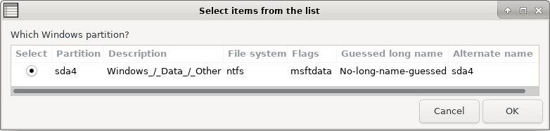
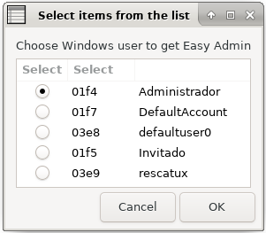

Choose your language.
Easy Windows (promote, reset and unlock) - Rescapp - Documentation
In addition to resetting the password (described below) this option also unlocks an account and promotes it so that it becomes a Windows administrator.
Problems that are usually solved
When not to use this option:
What do you get after using the option?
If everything goes ok the next time you boot your computer when Windows login appears you will either be logged in automatically or you will need to select your cleared password account. Just pressing RETURN (I mean that you don't need to write any password) will log in into the system.
Additionally the account will be promoted to an administrador role and it will also be unlocked (if the user was locked).
Steps
-
Step 1Rescapp searches for Windows system partitions present, on your sytem.
-
Step 2You are prompted:Which Windows partition? You are supposed to, choose the Windows partition which you want to be modified.

-
Step 3Rescapp tries to backup your Windows configuration files, on your Windows sytem.
-
Step 4You are optionally informed about the Windows configuration files backup process.You will get (if an error happens):
 [ERROR] Backup of SAM directory went wrong.
[ERROR] Backup of SAM directory went wrong.
-
Step 5Rescapp searches for Windows users, on your Windows sytem.
-
Step 6You are prompted:Choose Windows user to get Easy Admin You are supposed to, choose the Windows user you want its permissions to be modified.

-
Step 7You are informed about the Windows user unlock task.You either get:
 [SUCCESS] The user was unlocked OK! :)
[SUCCESS] The user was unlocked OK! :)
or
[ERROR] The user was not unlocked. Something went wrong! :(
-
Step 8You are informed about the Windows user promote to admin task.You either get:
[SUCCESS] The user was promoted to Admin OK! :)
or
[ERROR] The user was not promoted to Admin. Something went wrong! :(
-
Step 9You are informed about the Windows user password reset task.You either get:
[SUCCESS] Windows password was reset OK! :)
or
[ERROR] Windows password was not reset. Something went wrong! :(
-
Step 10You are informed about the overall Easy Windows (promote, reset and unlock) process.You either get:
[SUCCESS] Easy Windows (promote, reset and unlock) was OK! :)
or
[ERROR] Easy Windows (promote, reset and unlock) was not fully completed. Something went wrong! :(